Candidate List 20260816Last night — ZTF: 2,992 passed basic cuts (177 young) · LSST: 0 passed basic cuts (0 young)Previous Day Next Day
Section 1: New Sources (age<1d) Section 2: Old (1-5d) sources observed last nightplaceholder
Section 1: New Afterglow/FBOT Cands Last Night (3)
1. [ZTF] ZTF26aboocmr (Afterglow?) [Back to Top] [Share] [Trigger Swift] [Fritz Alert] [Fritz Source] [Lasair]RA, Dec: 282.88114, 41.10026 18h51m31.47s, 41d 6m0.92sGalactic (l, b): 70.7636, 17.4276 ext(g-r) = 0.13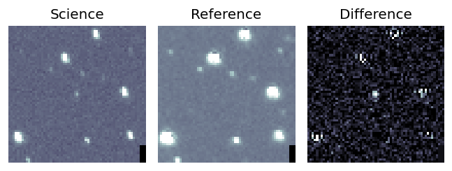
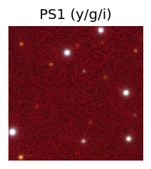
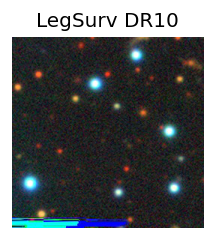
TESS: Sectors [ 14 26 40 41 53 54 74 80 81 118 119 120]
PS1: 0 sources in 3 arcsec
LegacySurvey: 1 sources in 3 arcsec Closest: d = 3.54 arcsec, 149.7 deg (east of north) photoz=0.68 (68% bounds 0.59, 0.79), type=PSF peak abs mag (ext. corrected) = -23.33 (68% bounds -22.93, -23.72)
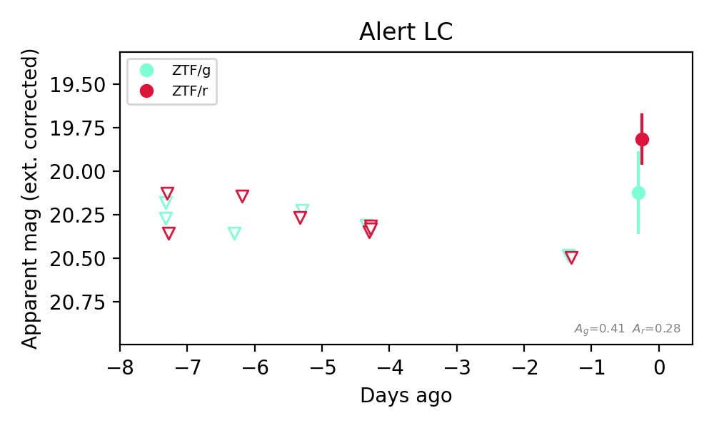
Extinction-corrected gr color:
From alerts: 0.31 +/- 0.28 mag
Consistent with synchrotron, g-r>0!
Rise Rate:
r: 0.65 mag/day
Fade Rate:
2. [ZTF] ZTF26abooilb (Afterglow?) [Back to Top] [Share] [Trigger Swift] [Fritz Alert] [Fritz Source] [Lasair]RA, Dec: 321.44708, 5.65478 21h25m47.30s, 5d39m17.21sGalactic (l, b): 58.41369, -30.49502 ext(g-r) = 0.09


TESS: Sectors 82
PS1: 0 sources in 3 arcsec
LegacySurvey: 1 sources in 3 arcsec Closest: d = 6.62 arcsec, 266.1 deg (east of north) photoz=1.07 (68% bounds 0.56, 1.38), type=PSF peak abs mag (ext. corrected) = -25.93 (68% bounds -24.2, -26.61)

Extinction-corrected gr color:
From alerts: -0.58 +/- 0.14 mag
Extinction-corrected gi color:
From alerts: -0.65 +/- 0.17 mag
Extinction-corrected ri color:
From alerts: -0.07 +/- 0.17 mag
Consistent with synchrotron, g-r>0!
Rise Rate:
g: 2.0 mag/day
r: 1.53 mag/day
i: 0.65 mag/day
Fade Rate:
3. [ZTF] ZTF26abooyfe (Afterglow?) [Back to Top] [Share] [Trigger Swift] [Fritz Alert] [Fritz Source] [Lasair]RA, Dec: 260.80261, 43.17599 17h23m12.63s, 43d10m33.56sGalactic (l, b): 68.54365, 33.76105 ext(g-r) = 0.024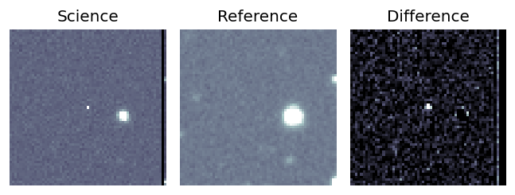
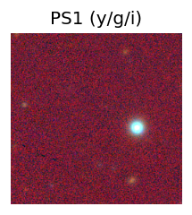
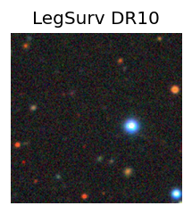
TESS: Sectors [ 25 26 51 52 53 78 80 117 118]
PS1: 0 sources in 3 arcsec
LegacySurvey: 1 sources in 3 arcsec Closest: d = 5.27 arcsec, 319.7 deg (east of north) photoz=0.95 (68% bounds 0.71, 1.17), type=REX peak abs mag (ext. corrected) = -24.39 (68% bounds -23.61, -24.94)
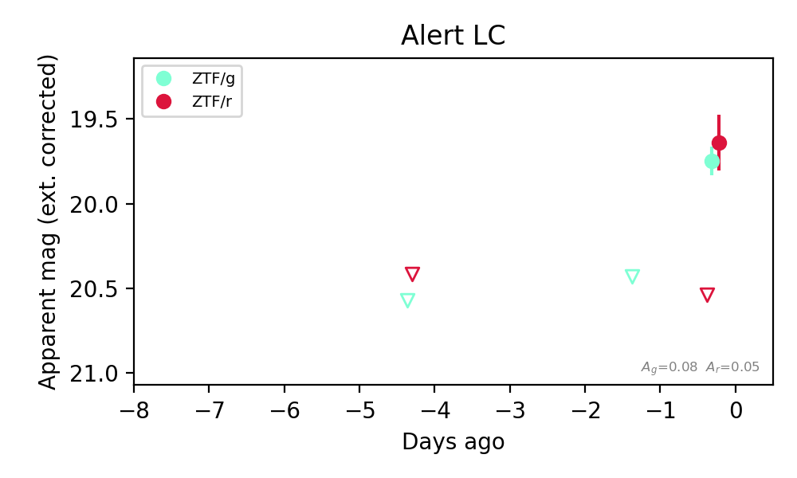
Extinction-corrected gr color:
From alerts: 0.11 +/- 0.19 mag
Consistent with synchrotron, g-r>0!
Rise Rate:
g: 0.65 mag/day
r: 5.67 mag/day
Fade Rate:
Section 2: Older Sources Observed Last Night (14)
0. [ZTF] ZTF26abnibuo (Afterglow?FBOT?) [Back to Top] [Share] [Trigger Swift] [Fritz Alert] [Fritz Source] [Lasair]RA, Dec: 269.70912, 41.95754 17h58m50.19s, 41d57m27.15sGalactic (l, b): 68.50314, 27.09279 ext(g-r) = 0.037


TESS: Sectors [ 25 26 40 52 53 54 74 79 80 117 118 119]
SDSS (<15 kpc):Found SDSS phot-z: z=0.12; peak abs mag = -19.89
NED photo-z only: WISEA J175850.15+415727.3 (G, 0.4″) z=0.0684 [zflag PUN] — not used for peak abs mag
PS1: 0 sources in 3 arcsec
LegacySurvey: 1 sources in 3 arcsec Closest: d = 0.34 arcsec, 291.0 deg (east of north) photoz=0.08 (68% bounds 0.06, 0.09), type=SER peak abs mag (ext. corrected) = -18.93 (68% bounds -18.39, -19.25)

Extinction-corrected gr color:
From alerts: 0.32 +/- 0.16 mag
Consistent with synchrotron, g-r>0!
Rise Rate:
g: 0.44 mag/day
r: 0.51 mag/day
Fade Rate:
1. [ZTF] ZTF26abnivfh (FBOT?) [Back to Top] [Share] [Trigger Swift] [Fritz Alert] [Fritz Source] [Lasair]RA, Dec: 335.58042, 12.71266 22h22m19.30s, 12d42m45.59sGalactic (l, b): 75.86993, -36.18927 ext(g-r) = 0.086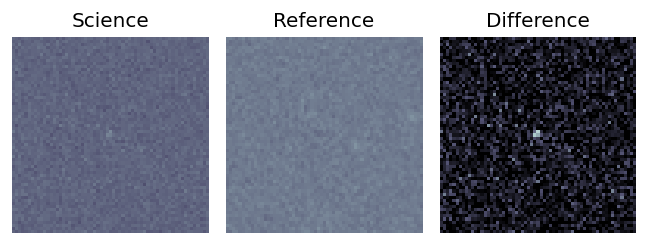
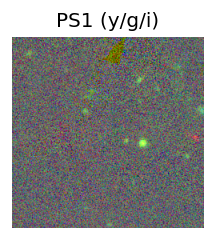
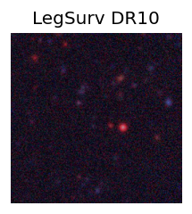
TESS: Sectors [56 82 83]
PS1: 0 sources in 3 arcsec
LegacySurvey: 1 sources in 3 arcsec Closest: d = 1.06 arcsec, 83.5 deg (east of north) photoz=0.67 (68% bounds 0.53, 0.9), type=PSF peak abs mag (ext. corrected) = -23.26 (68% bounds -22.63, -24.02)
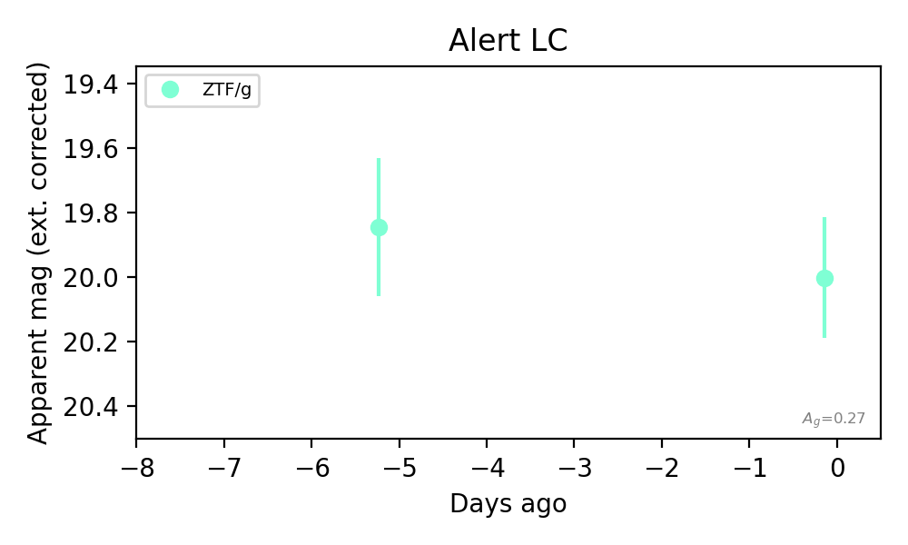
Rise Rate:
g: 0.22 mag/day
Fade Rate:
2. [ZTF] ZTF26abnozsn (Afterglow?) [Back to Top] [Share] [Trigger Swift] [Fritz Alert] [Fritz Source] [Lasair]RA, Dec: 330.39961, -0.84305 22h 1m35.91s, 0d-50m-34.98sGalactic (l, b): 58.5226, -41.54646 ext(g-r) = 0.08


TESS: Sectors [ 42 55 82 92 116]
NED host (10 arcsec):Found WISEA J220135.92-005035.1 (G, 0.3″); NED spec-z: z=0.1100 [zflag SLS]; peak abs mag = -19.35
PS1: 0 sources in 3 arcsec
LegacySurvey: 1 sources in 3 arcsec Closest: d = 0.32 arcsec, 141.1 deg (east of north) photoz=0.09 (68% bounds 0.08, 0.1), type=SER peak abs mag (ext. corrected) = -18.94 (68% bounds -18.52, -19.2)

Extinction-corrected gr color:
From alerts: -1.13 +/- 99 mag
Extinction-corrected gi color:
From alerts: -0.68 +/- 99 mag
Extinction-corrected ri color:
From alerts: -0.43 +/- 99 mag
Rise Rate:
g: 0.17 mag/day
r: 0.38 mag/day
Fade Rate:
r: 1.04 mag/day
3. [ZTF] ZTF26abodqhq (Afterglow?) [Back to Top] [Share] [Trigger Swift] [Fritz Alert] [Fritz Source] [Lasair]RA, Dec: 217.16134, -3.32968 14h28m38.72s, -3d-19m-46.84sGalactic (l, b): 344.29828, 51.56121 ext(g-r) = 0.099


TESS: Sectors [ 51 91 115]
SDSS (<15 kpc):Found SDSS phot-z: z=0.02; peak abs mag = -16.11
NED host (10 arcsec):Found CGCG 019-040 (G, 9.1″); NED spec-z: z=0.0305 [zflag SUN]; peak abs mag = -16.86
PS1: 0 sources in 3 arcsec
LegacySurvey: 1 sources in 3 arcsec Closest: d = 4.65 arcsec, 143.9 deg (east of north) photoz=0.19 (68% bounds 0.15, 0.27), type=SER peak abs mag (ext. corrected) = -21.09 (68% bounds -20.43, -21.88)

Rise Rate:
r: 0.97 mag/day
Fade Rate:
r: 0.48 mag/day
4. [ZTF] ZTF26aboghvp (FBOT?) [Back to Top] [Share] [Trigger Swift] [Fritz Alert] [Fritz Source] [Lasair]RA, Dec: 335.43152, 38.09707 22h21m43.57s, 38d 5m49.46sGalactic (l, b): 93.10062, -15.95326 ext(g-r) = 0.143


TESS: Sectors [ 16 56 83 121]
SDSS (<15 kpc):Found SDSS phot-z: z=0.45; peak abs mag = -22.29
PS1: 0 sources in 3 arcsec
LegacySurvey: 0 sources in 3 arcsec

Extinction-corrected gr color:
From alerts: -0.1 +/- 0.23 mag
Consistent with synchrotron, g-r>0!
Rise Rate:
g: 0.2 mag/day
r: 0.21 mag/day
Fade Rate:
5. [ZTF] ZTF26abohdvv (FBOT?) [Back to Top] [Share] [Trigger Swift] [Fritz Alert] [Fritz Source] [Lasair]RA, Dec: 324.13425, -0.34617 21h36m32.22s, 0d-20m-46.23sGalactic (l, b): 54.39078, -36.1459 ext(g-r) = 0.054


TESS: Sectors [55 82]
SDSS (<15 kpc):Found SDSS phot-z: z=0.25; peak abs mag = -21.24
PS1: 0 sources in 3 arcsec
LegacySurvey: 1 sources in 3 arcsec Closest: d = 0.46 arcsec, 236.9 deg (east of north) photoz=0.1 (68% bounds 0.07, 0.12), type=SER peak abs mag (ext. corrected) = -19.19 (68% bounds -18.34, -19.49)

Extinction-corrected gr color:
From alerts: -0.25 +/- 0.15 mag
Extinction-corrected gi color:
From alerts: -0.46 +/- 0.17 mag
Extinction-corrected ri color:
From alerts: -0.21 +/- 0.16 mag
Rise Rate:
g: 0.31 mag/day
r: 0.6 mag/day
i: 0.63 mag/day
Fade Rate:
6. [ZTF] ZTF26abohnal (FBOT?) [Back to Top] [Share] [Trigger Swift] [Fritz Alert] [Fritz Source] [Lasair]RA, Dec: 324.16608, 0.11457 21h36m39.86s, 0d 6m52.46sGalactic (l, b): 54.88401, -35.91311 ext(g-r) = 0.066


TESS: Sectors [55 82]
SDSS (<15 kpc):Found SDSS phot-z: z=0.20; peak abs mag = -20.28
PS1: 0 sources in 3 arcsec
LegacySurvey: 1 sources in 3 arcsec Closest: d = 0.89 arcsec, 268.3 deg (east of north) photoz=0.75 (68% bounds 0.32, 1.99), type=REX peak abs mag (ext. corrected) = -23.72 (68% bounds -21.5, -26.31)

Extinction-corrected gr color:
From alerts: -0.39 +/- 0.22 mag
Extinction-corrected gi color:
From alerts: -0.61 +/- 0.27 mag
Extinction-corrected ri color:
From alerts: -0.23 +/- 0.27 mag
Consistent with synchrotron, g-r>0!
Rise Rate:
g: 0.36 mag/day
r: 0.1 mag/day
Fade Rate:
7. [ZTF] ZTF26abohzjc (FBOT?) [Back to Top] [Share] [Trigger Swift] [Fritz Alert] [Fritz Source] [Lasair]RA, Dec: 1.80068, 3.07907 0h 7m12.16s, 3d 4m44.67sGalactic (l, b): 101.76541, -57.96325 WARNING: 2.11 deg from ecliptic plane ext(g-r) = 0.023


TESS: Sectors [42 70]
SDSS (<15 kpc):Found SDSS phot-z: z=0.12; peak abs mag = -18.87
PS1: 0 sources in 3 arcsec
LegacySurvey: 1 sources in 3 arcsec Closest: d = 1.48 arcsec, 343.8 deg (east of north) photoz=0.3 (68% bounds 0.11, 0.67), type=EXP peak abs mag (ext. corrected) = -21.15 (68% bounds -18.8, -23.19)

Extinction-corrected gr color:
From alerts: -0.07 +/- 0.16 mag
Extinction-corrected gi color:
From alerts: -0.2 +/- 0.22 mag
Extinction-corrected ri color:
From alerts: -0.14 +/- 0.18 mag
Consistent with synchrotron, g-r>0!
Rise Rate:
g: 0.27 mag/day
r: 0.2 mag/day
i: 0.11 mag/day
Fade Rate:
8. [ZTF] ZTF26abolopo (Afterglow?) [Back to Top] [Share] [Trigger Swift] [Fritz Alert] [Fritz Source] [Lasair]RA, Dec: 249.1901, 4.16011 16h36m45.62s, 4d 9m36.40sGalactic (l, b): 20.19866, 31.6809 ext(g-r) = 0.08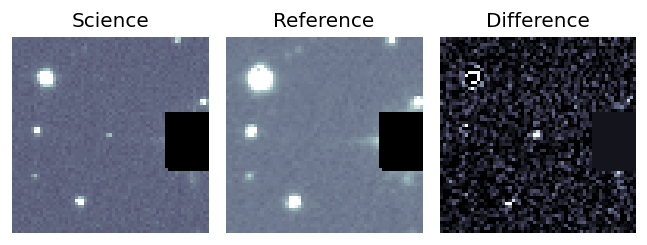
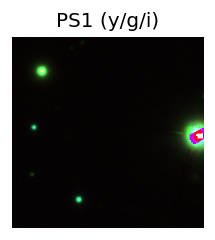
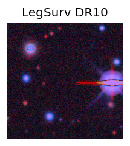
TESS: Sectors 117
PS1: 0 sources in 3 arcsec
LegacySurvey: 0 sources in 3 arcsec
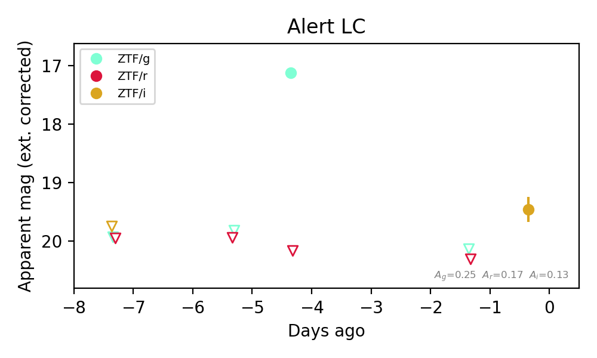
Extinction-corrected gr color:
From alerts: -3.04 +/- 99 mag
Rise Rate:
g: 2.82 mag/day
Fade Rate:
g: 1.01 mag/day
9. [ZTF] ZTF26abomfhx (Afterglow?) [Back to Top] [Share] [Trigger Swift] [Fritz Alert] [Fritz Source] [Lasair]RA, Dec: 255.37165, 30.16795 17h 1m29.20s, 30d10m4.62sGalactic (l, b): 52.01267, 35.75309 ext(g-r) = 0.033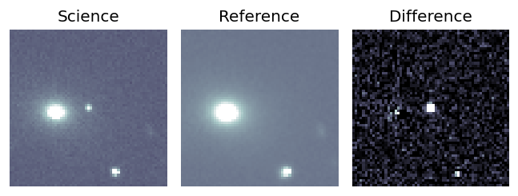
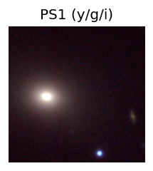
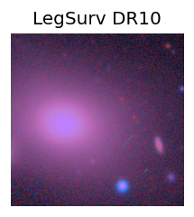
TESS: Sectors [ 25 52 79 117]
PS1: 0 sources in 3 arcsec
LegacySurvey: 0 sources in 3 arcsec
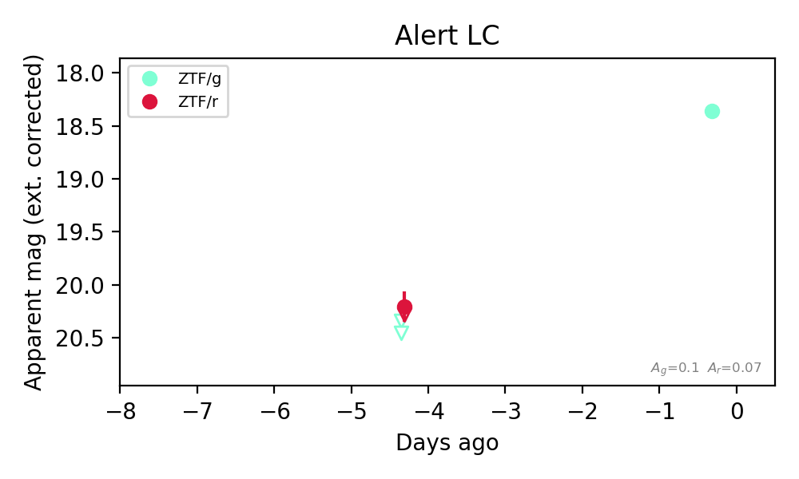
Extinction-corrected gr color:
From alerts: 0.66 +/- 0.36 mag
Consistent with synchrotron, g-r>0!
Rise Rate:
g: 0.52 mag/day
Fade Rate:
10. [ZTF] ZTF26abonwxf (FBOT?) [Back to Top] [Share] [Trigger Swift] [Fritz Alert] [Fritz Source] [Lasair]RA, Dec: 316.157, -11.45997 21h 4m37.68s, -11d-27m-35.89sGalactic (l, b): 37.71284, -34.71169 ext(g-r) = 0.102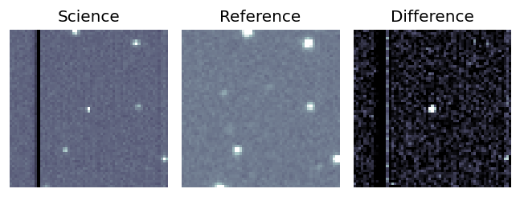
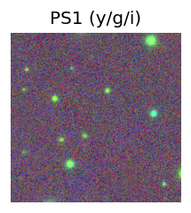
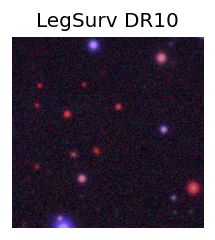
TESS: Sectors [ 92 116]
SDSS (<15 kpc):Found SDSS phot-z: z=0.78; peak abs mag = -24.39
PS1: 0 sources in 3 arcsec
LegacySurvey: 1 sources in 3 arcsec Closest: d = 1.65 arcsec, 89.6 deg (east of north) photoz=1.04 (68% bounds 0.85, 1.38), type=PSF peak abs mag (ext. corrected) = -25.15 (68% bounds -24.62, -25.91)
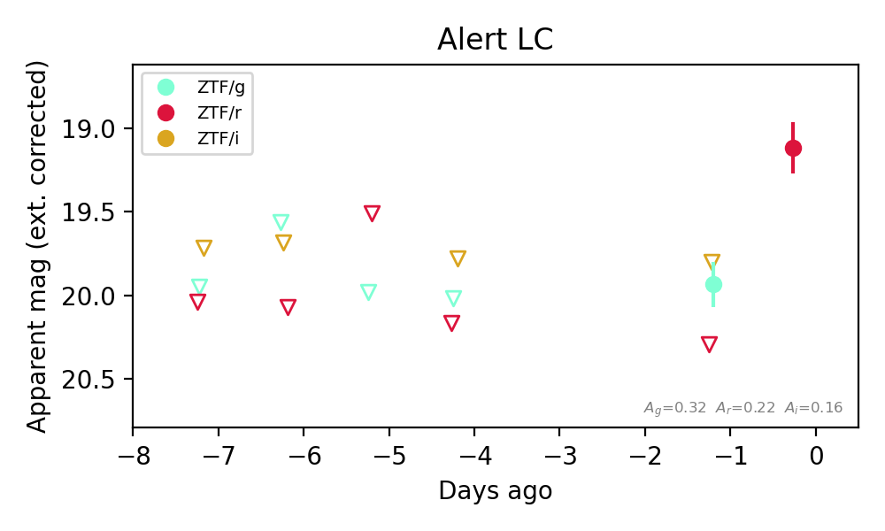
Extinction-corrected gr color:
From alerts: -0.36 +/- 99 mag
Extinction-corrected gi color:
From alerts: 0.13 +/- 99 mag
Rise Rate:
g: 0.01 mag/day
r: 1.19 mag/day
Fade Rate:
11. [ZTF] ZTF26abopmel (Afterglow?) [Back to Top] [Share] [Trigger Swift] [Fritz Alert] [Fritz Source] [Lasair]RA, Dec: 273.98451, 7.17351 18h15m56.28s, 7d10m24.64sGalactic (l, b): 35.34665, 11.13797 ext(g-r) = 0.29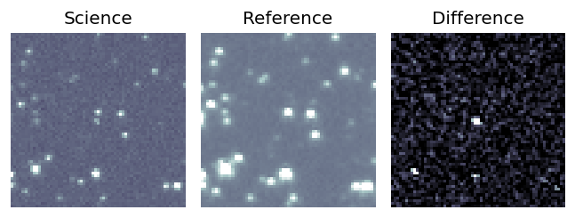
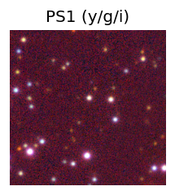

TESS: Sectors [ 80 118]
PS1: 0 sources in 3 arcsec
LegacySurvey: 0 sources in 3 arcsec
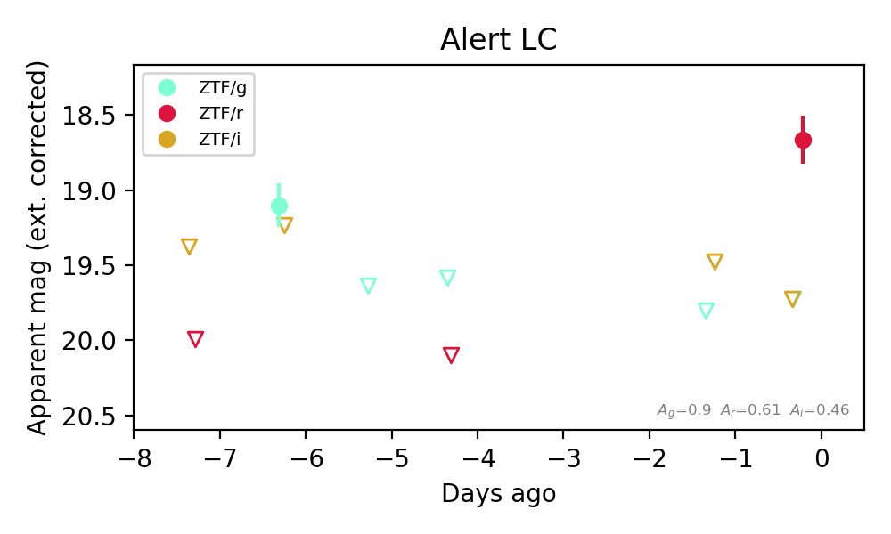
Extinction-corrected gr color:
From alerts: 1.06 +/- 99 mag
Extinction-corrected gi color:
From alerts: -0.13 +/- 99 mag
Extinction-corrected ri color:
From alerts: -1.06 +/- 99 mag
Rise Rate:
g: 0.26 mag/day
r: 0.35 mag/day
Fade Rate:
g: 0.52 mag/day
12. [ZTF] ZTF26abopnme (FBOT?) [Back to Top] [Share] [Trigger Swift] [Fritz Alert] [Fritz Source] [Lasair]RA, Dec: 343.97292, 30.15728 22h55m53.50s, 30d 9m26.22sGalactic (l, b): 95.13476, -26.40456 ext(g-r) = 0.054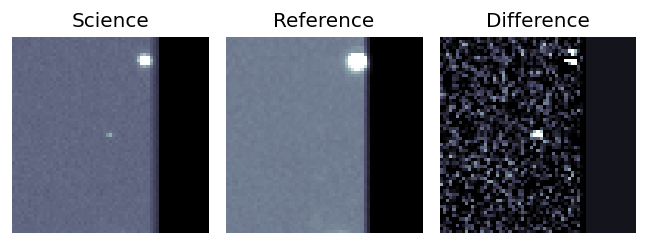
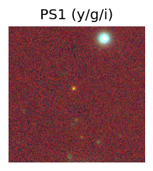
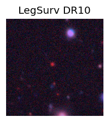
TESS: Sectors [56 83]
PS1: 0 sources in 3 arcsec
LegacySurvey: 1 sources in 3 arcsec Closest: d = 2.59 arcsec, 39.7 deg (east of north) photoz=0.36 (68% bounds 0.22, 0.53), type=PSF peak abs mag (ext. corrected) = -21.51 (68% bounds -20.33, -22.55)
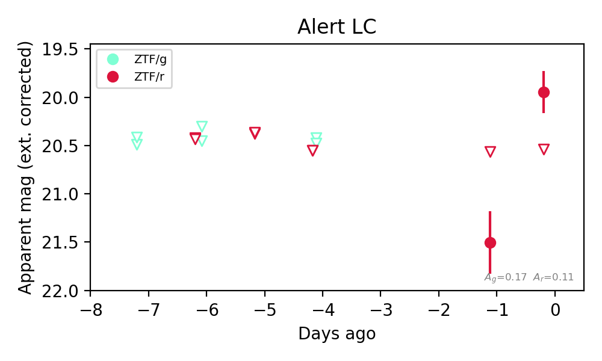
Rise Rate:
r: 1.7 mag/day
Fade Rate:
13. [ZTF] ZTF26aboqduh (Afterglow?) [Back to Top] [Share] [Trigger Swift] [Fritz Alert] [Fritz Source] [Lasair]RA, Dec: 357.18731, 32.85872 23h48m44.95s, 32d51m31.40sGalactic (l, b): 108.01294, -28.19042 ext(g-r) = 0.053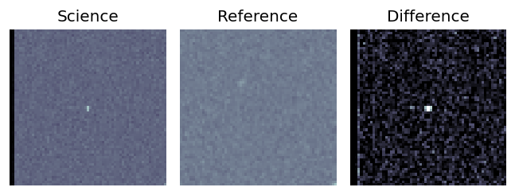
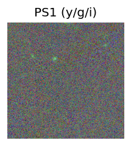
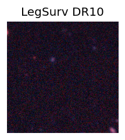
TESS: Sectors [57 84]
PS1: 0 sources in 3 arcsec
LegacySurvey: 0 sources in 3 arcsec
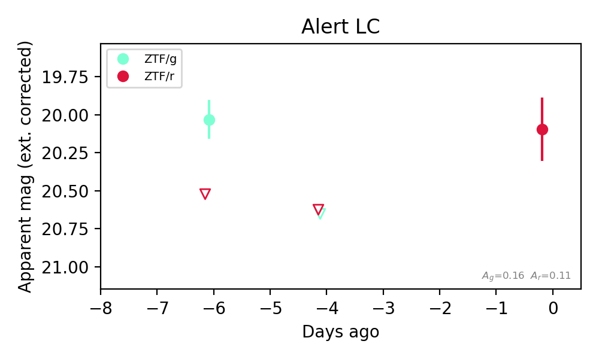
Extinction-corrected gr color:
From alerts: -0.49 +/- 99 mag
Rise Rate:
g: 0.03 mag/day
r: 0.13 mag/day
Fade Rate:
g: 0.31 mag/day